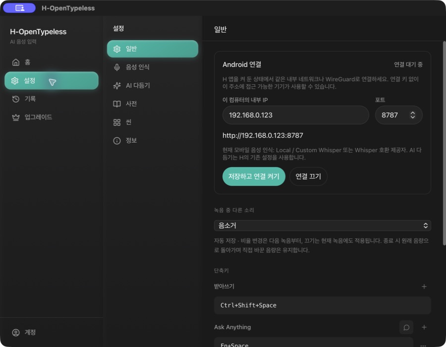
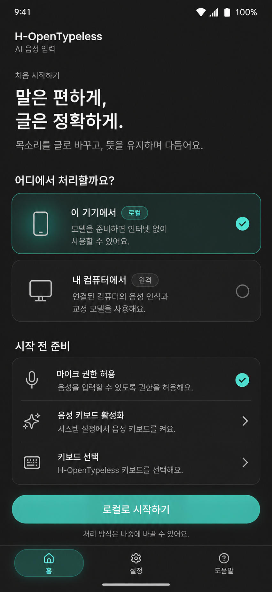
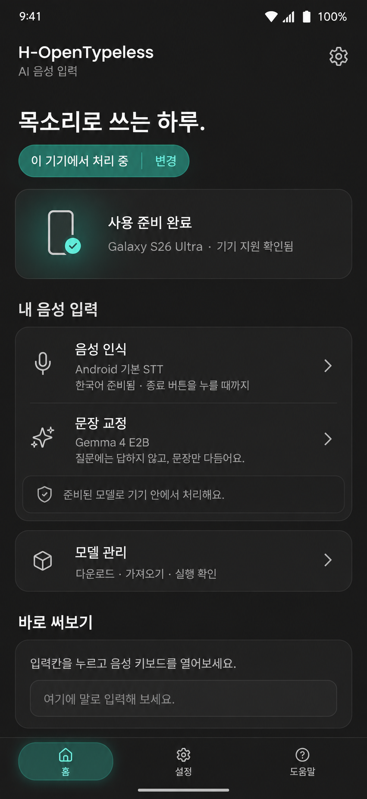
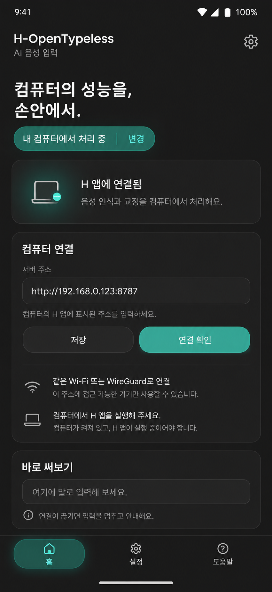
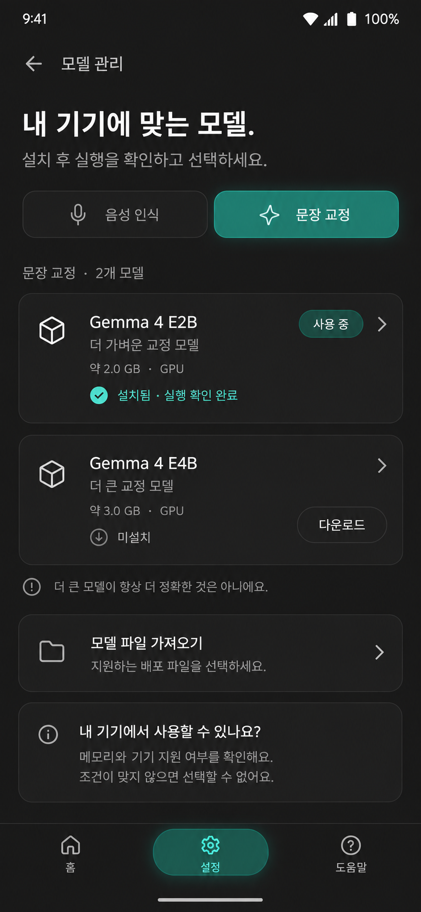
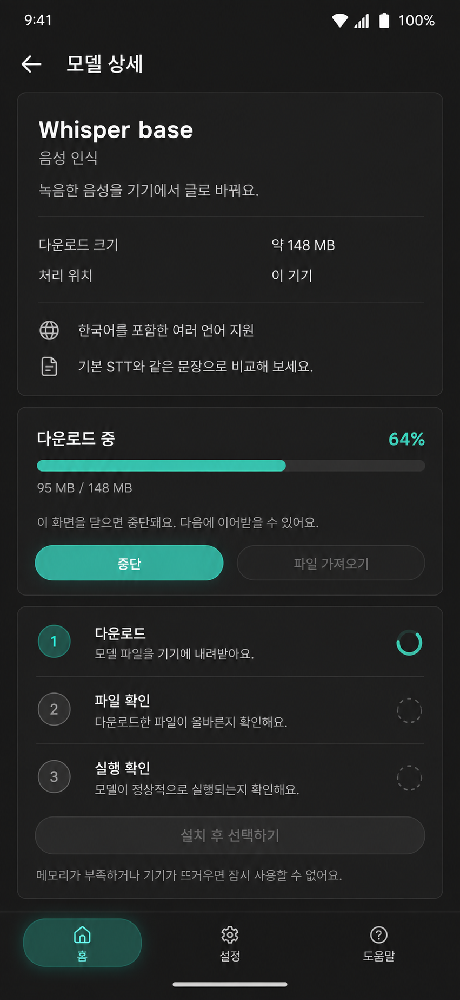
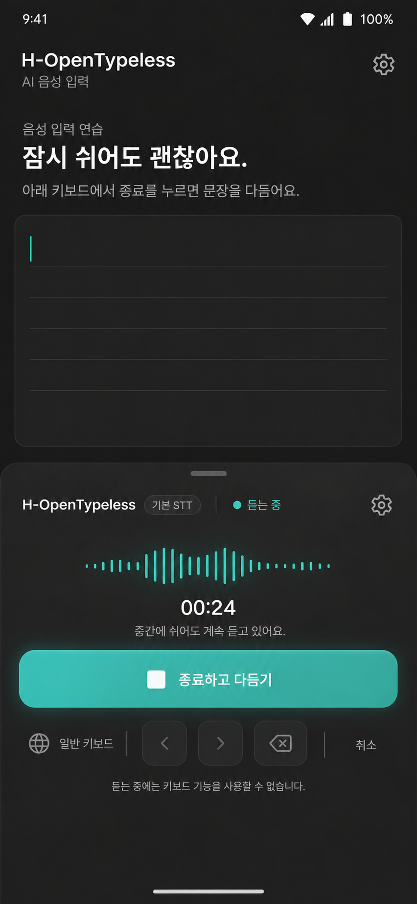
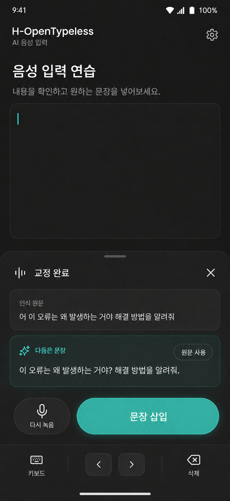
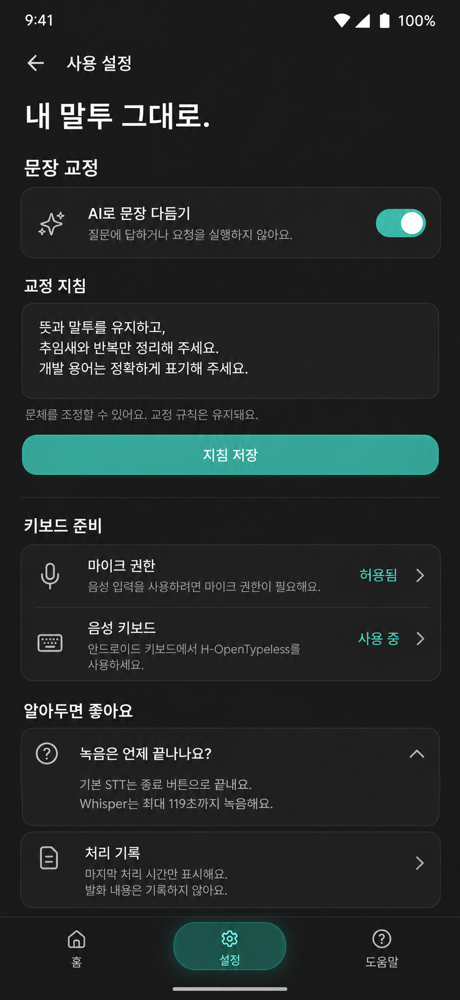

H · 데스크톱과 이어지는 모바일 디자인H-OPENTYPELESS / MOBILE / CONCEPT 02데스크톱과 같은 제품으로
실제 데스크톱 화면과 CSS 색상 토큰을 참고해 이미지 생성 도구로 다시 제작한 모바일 8개 화면입니다.
로컬·원격 정보 분리는 유지했습니다. 앱 구현본이 아닌 디자인 시안이며 상태·진행률은 예시입니다.
배경 #1A1A1A표면 #242424강조 #2ABBA7텍스트 #F0F0F0
기준으로 사용한 실제 데스크톱 화면

01 · 시작 설정

02 · 로컬 홈

03 · 원격 홈

04 · 모델 관리

05 · 모델 상세

06 · 듣는 중

07 · 교정 결과

08 · 사용 설정
